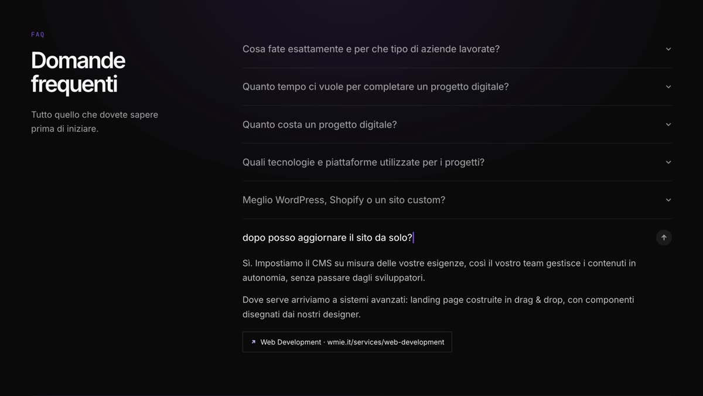
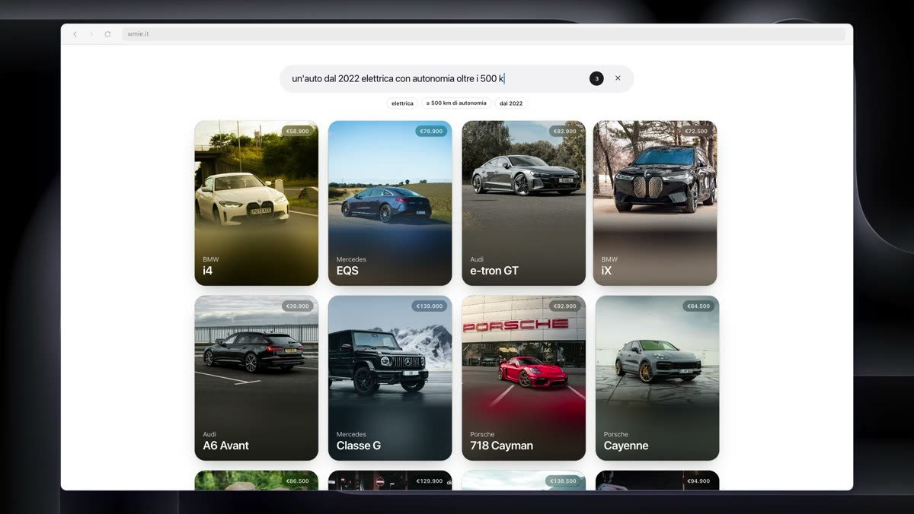
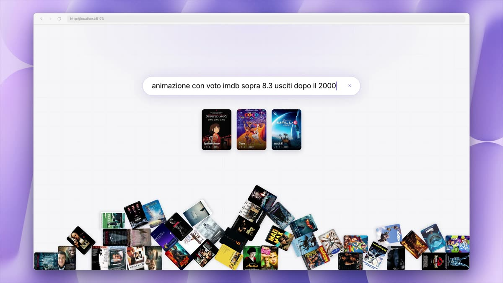
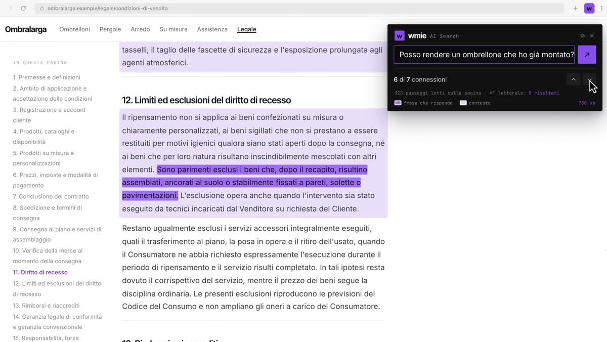

Componenti
Quattro pezzi di interfaccia, visti mentre funzionano
Quando una funzione ci sembra buona la costruiamo qui, isolata, prima di portarla dentro il sito di un cliente. Serve a vedere se il comportamento regge fuori dalla nostra testa.
Siamo wmie, uno studio di Cagliari che progetta e costruisce siti, e-commerce e web app. Ogni pagina mostra un componente in funzione e la sua scheda tecnica: come si chiama, su quale pattern si regge, come lo mettiamo in produzione.

L'ultima riga risponde a qualsiasi domanda
Un accordion di FAQ con una riga in più: il visitatore scrive la domanda con parole sue e la sezione risponde leggendo le pagine del sito, con il link a quella da cui prende la risposta.

Una frase intera al posto di sei filtri
«un'auto dal 2022 elettrica con autonomia oltre i 500 km» e la griglia si stringe a ogni pezzo della frase, lettera per lettera.

Il catalogo che risponde a una frase
«animazione con voto imdb sopra 8.3 usciti dopo il 2000»: a ogni pezzo della frase le locandine giuste si staccano dal mucchio e salgono in fila, con la fisica vera.

Il ⌘F che capisce la domanda
Una pagina legale lunghissima e una domanda in italiano. Si accendono le frasi che rispondono, anche quando non contengono nessuna delle parole della domanda.
Perché li teniamo pubblici
Un componente che resta in una cartella serve a una persona sola. Pubblicato, diventa una cosa che possiamo mandare a un cliente a metà di una call, e che chiunque può aprire per capire in venti secondi di cosa stiamo parlando. Spiega più di una slide, in meno tempo.
Le versioni raccontate di questi lavori stanno nel Playground di wmie.it, insieme al resto delle esplorazioni di design che facciamo per i progetti. L'elenco completo, che si aggiorna da solo, sta nella pagina Esplorazioni di design.
Una di queste avrebbe senso sul vostro sito?
Costruiamo ecosistemi digitali per aziende con un business già validato: siti, e-commerce, web app, integrazioni AI e infrastruttura cloud.